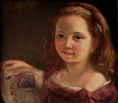
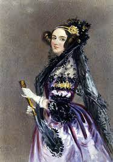

Ada Lovelace,seu verdadeiro nome é Augusta Ada King ,matemática que escreveu o primeiro algoritmo do mundo.Quem a criou foi sua mãe, a também matemática Anne Isabella Milbanke.Cinco semanas depois do nascimento de Ada, Anne não pôde mais suportar os casos do marido e o abandonou.
Ela se tornou uma aficionada pelos avanços tecnológicos da Revolução Industrial, enquanto ele era um apoiador do ludismo no Parlamento inglês.Aos 17 anos, Ada já sabia que queria trabalhar com o inventor Charles Babbage.
Sua contribuição para programação
Em 1843 ela elaborou planos de como uma máquina chamada Analytical Engine deveria realizar cálculos. A Analytical Engine foi inventada por seu amigo matemático Charles Babbage – e é considerada o primeiro computador.Foi com as instruções de Ada que a máquina conseguiu calcular o Número de Bernoulli, por exemplo. Essas instruções são hoje conhecidas como algoritmos. Os algoritmos são “receitas” seguidas pela máquina para desempenhar uma determinada função.Por isso, muitas das evoluções tecnológicas que vieram depois dos estudos de Ada só foram possíveis devido às descobertas dela.A linguagem Ada foi criada na década de 1970, pelo Departamento de Defesa dos Estados Unidos, mas hoje em dia não é muito usada.Curiosidade: A segunda terça-feira de outubro é conhecida como o Dia da Ada Lovelace, dia de inspirar mulheres a trabalhar na área de tecnologia.
Ada Lovelace tinha câncer de útero e morreu por causa da doença em 1852, aos 36 anos.Mas deixou um grande legado.